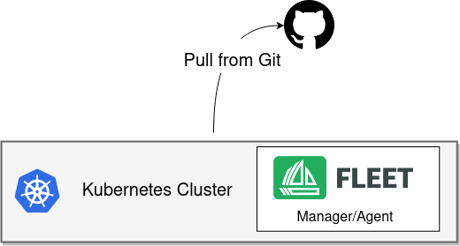

Single Cluster Install¶

In this use case you have only one cluster. The cluster will run both the Fleet manager and the Fleet agent. The cluster will communicate with Git server to deploy resources to this local cluster. This is the simplest setup and very useful for dev/test and small scale setups. This use case is supported as a valid use case for production.
Prerequisites¶
Helm 3¶
Fleet is distributed as a Helm chart. Helm 3 is a CLI, has no server side component, and is fairly straight forward. To install the Helm 3 CLI follow the official install instructions. The TL;DR is
macOS
brew install helm
Windows
choco install kubernetes-helm
Kubernetes¶
Fleet is a controller running on a Kubernetes cluster so an existing cluster is required. For the single cluster use case you will install Fleet to the cluster which you intend to manage with GitOps. Any Kubernetes community supported version of Kubernetes will work, in practice this means 1.15 or greater.
Install¶
Install the following two Helm charts.
First install the Fleet CustomResourcesDefintions.
helm -n fleet-system install --create-namespace --wait \
fleet-crd https://github.com/rancher/fleet/releases/download/v0.3.3/fleet-crd-0.3.3.tgz
Second install the Fleet controllers.
helm -n fleet-system install --create-namespace --wait \
fleet https://github.com/rancher/fleet/releases/download/v0.3.3/fleet-0.3.3.tgz
Fleet should be ready to use now for single cluster. You can check the status of the Fleet controller pods by running the below commands.
kubectl -n fleet-system logs -l app=fleet-controller
kubectl -n fleet-system get pods -l app=fleet-controller
NAME READY STATUS RESTARTS AGE
fleet-controller-64f49d756b-n57wq 1/1 Running 0 3m21s
You can now register some git repos in the fleet-local namespace to start deploying Kubernetes resources.